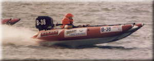
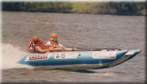

No, not the feathered kind of bird but the performance outboard inflatable kind that fly. These boats are being imported from South Africa and go by the name of DUX, THUNDERDUCKS, THUNDERCAT and GEMINI. In South Africa they have a racing program for these performance inflatables which has over 300 registered boats competing in surf racing in the ocean, along with river and inland lake racing.


These boats have evolved for the past 12 years in South Africa for competitive
racing purposes. They weigh around 165 pounds, have a 11 inch deep tunnel,
collapsible floor boards, flow through aluminum transom, 70 hp Max rating,
fiberglass front wing, 7 air chambers and heavy-duty rubber strakes. The
boats measure 13' long and have a 6' beam. The cost to go racing is nominal
and the motors are readily available as tourist motors. No racing or specialty
motors are allowed in the two classes available, allowing these boats to
serve dual purpose as a race & pleasure craft.
OPI's seem to be a cross of OPC, offshore, and stock outboard. They
fly and turn like a OPC boat and there is a pilot and co-pilot who work
together like in offshore. These boats have the same rough water capabilities
as an offshore does (races have been run in 40 mph winds and 15 foot waves in
South Africa). Their handling is very weight sensitive (the reason for a co-pilot)
as it is in stock outboard. The only thing it does not have in common is the
price and the amount of work it takes to go racing. Since this is a
performance rig it requires skill to run, and they can blow over, spin out or
flip. The danger is reduced as these boats are pvc material filled with air
but there are still spinning exposed props.
In South Africa their circuit includes divisional and national circuits. The
national circuit includes surf racing, where the course is set up right off
the beach where the waves break, and long hauls where the course goes for 100
miles in the ocean. Inland lake racing is on a closed course as well as river
racing. They also have a once a year race that goes over 5 days from city
to city running the boats along the coast. The attrition rate is very low,
only 5%. The construction of these craft are built to endure the most extreme
conditions.
There are two classes offered. BANDIT class which allows a 34 cid (550cc)
motor. This class will power the boat with a two person crew to speeds of
45 mph. The second class that is being offered at this time is "OUTLAW"
class, it allows for a 46 cid (750cc) motor. "B" class can reach speeds
of near 60mph. All the motors perform the best with a 15" shaft motor. If
the interest is there we will include classes that will allow for performance
modifications. The pilot must be of 18 years old and the co-pilot must be at
least 14 years old. We are encouraging family teams (father-son,
mother-daughter, husband-wife, boy friend / girl friend ect.). Currently
we have one husband-wife team and one father-son team with a few more family
teams being formed at this time.
Ralph Provitz
Chairman - Performance Outboard Inflatable
[text edited for this webpage]
 Return to the What Is A Hydroplane page.
Return to the What Is A Hydroplane page.
All contents Copyright © 1997 Spirit of Detroit THUNDERFEST, except where noted.
Web page created by Brian Reed.
 Return to the Top THUNDERFEST page.
Return to the Top THUNDERFEST page.
All Rights Reserved.